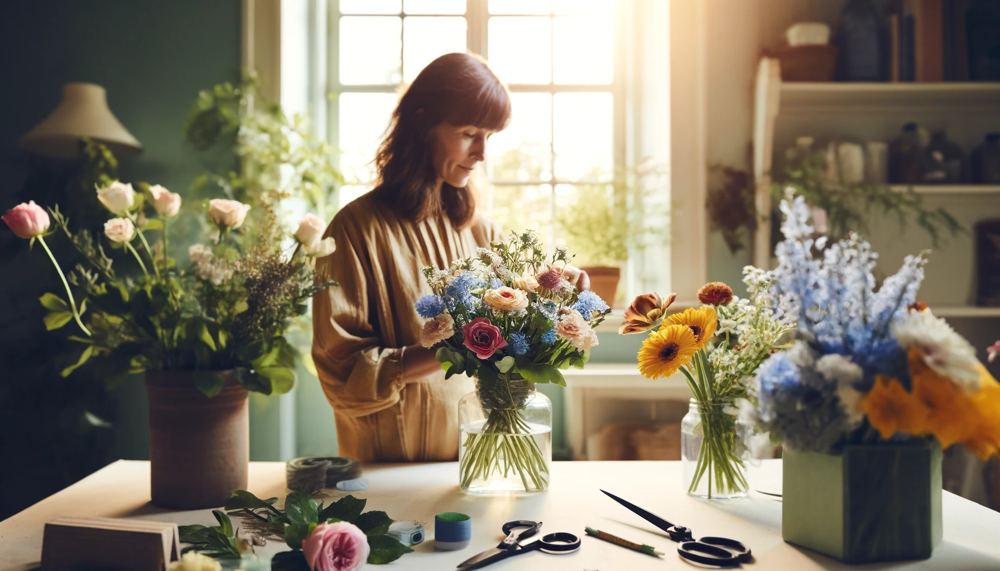
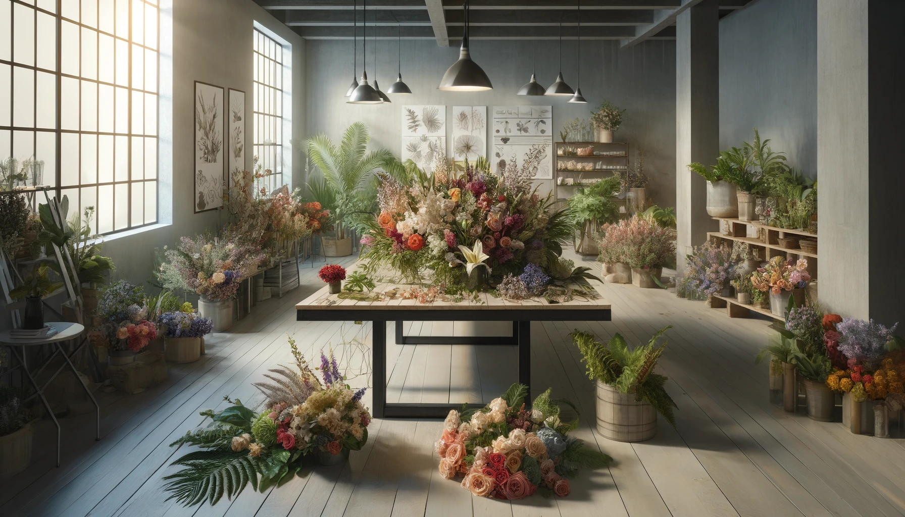
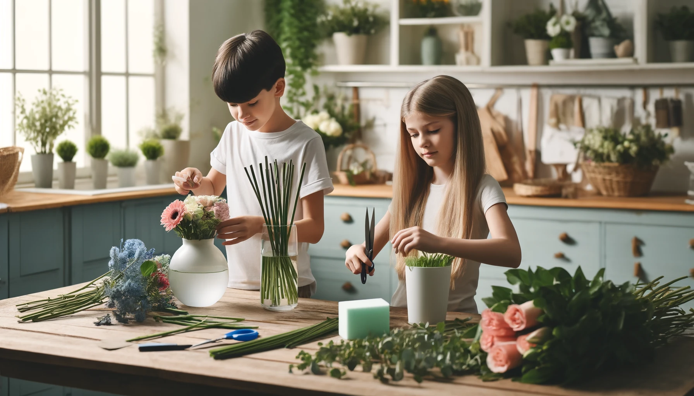

Designing with Hiyas Tips for Creating your Own Floral Arrangments Home
Published on April 19, 2024 | Hiyas Flowershop
Creating your own floral arrangements at home is an enjoyable and fulfilling activity that can brighten your living space and allow you to express your creativity. Through designing with flowers, you learn to appreciate the beauty of nature and gain a deeper understanding of aesthetic principles like balance, proportion, and color harmony. Whether you're a beginner or an experienced florist, the process of arranging flowers is both therapeutic and artistic.

Step 1: Select Your Flowers and Foliage
Start by choosing a variety of flowers and foliage that complement each other in terms of color, texture, and size. This selection will set the tone for your entire arrangement. Consider the setting where the arrangement will be placed and the mood you want to create. Mixing different types of flowers and greens can add contrast and depth to your arrangement, making it more visually appealing.

Step 2: Prepare Your Materials
Proper preparation of your materials is crucial for the longevity and beauty of your arrangement. Begin by cutting the stems at a 45-degree angle under water to prevent air from entering the stems, which can block water absorption. Choose a clean vase or container that matches the style you aim for, and consider using floral foam to provide a stable base for the flowers, especially if you are creating a large or complex arrangement.

Step 3: Assemble Your Arrangement
Place the largest or most striking flowers first to form the structure of your arrangement. These are usually the focal points. Next, fill in around these with smaller, secondary flowers to add fullness and variety. Finally, incorporate greenery to cover any visible stems or mechanics and to add texture and color contrast. Adjust the elements as needed to ensure the arrangement is balanced and harmonious from all angles.
By following these basic steps, you can start experimenting with different styles and techniques to create beautiful, personalized floral arrangements at home. Enjoy the process of combining elements and creating something unique each time.